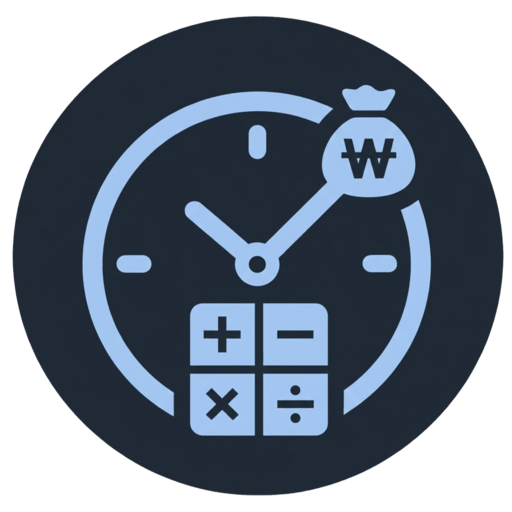

Portfolio · 2026
Ji Hyun Yoon
Sales Engineer
About Me
I design solutions that not only work technically,
but solve real problems people actually face.
HR and customer support professional turned AI-focused solution builder.
Focused on applied AI, practical product delivery, and customer-facing problem solving.
Focus
Applied AI / Product Prototyping / Solution Design
Strength
Business context + technical execution
Keywords
Customer thinking, MVP, system design
Experience
HR / GA Agent — Josun Hotels & Resorts
Feb 2022 – Jul 2025Recruitment, onboarding, HR operations, GA coordination
Game Master — Blizzard Entertainment
May 2019 – Dec 2021Customer issue resolution, live support, player communication
Education
B.A. in Public Administration
Mar 2013 – Aug 2019Hankuk University of Foreign Studies
Training
Intel AI for Future Workforce
Nov 2025 – May 2026Applied AI, prototyping, workflow design, product building
Certifications
Project 01
WalkMate
AI Navigation for Visually Impaired

Traditional navigation apps can guide routes, but they do not recognize real-world obstacles such as scooters, bollards, or street hazards. For visually impaired users, that gap becomes a direct safety issue.
WalkMate combines obstacle detection and navigation in one mobile experience. Instead of relying on unstable compass-heavy behavior, it uses direction-vector logic for clearer guidance and sends detected hazard data to the backend for reporting and follow-up.
- Real-time hazard detection during walking
- Direction-vector navigation instead of compass-heavy UX
- Automatic hazard reporting pipeline with image + location
- Led the overall mobile / backend / admin architecture
- Designed GPS direction calculation logic and navigation flow
- Connected detection, reporting, and data flow end to end
Demonstrates how AI can solve a real accessibility problem and scale into public safety or smart-city use cases.
Project 02
Onboarding Assistant
HR-focused AI Assistant

New hires often receive information in scattered documents and repeated verbal guidance. That creates friction for employees and recurring manual workload for HR teams.
This product combines FAQ cards, checklist flows, and AI chatbot support in one onboarding experience. It also includes fallback logic so the product remains usable even when AI responses fail.
- FAQ, checklist, and chatbot in one onboarding flow
- Built from real HR pain points, not hypothetical use cases
- Fallback UX designed for reliability during AI failure
- Defined the full user flow based on real onboarding operations
- Implemented chatbot integration and fallback interaction logic
- Positioned the product as a clear B2B SaaS use case
Shows how AI can reduce operational friction and create measurable value in HR-facing enterprise workflows.
Project 03
Wedding AI
Data-driven Vendor Recommendation

Wedding planning is full of fragmented information, inconsistent pricing, and difficult comparisons. That makes vendor selection slow, stressful, and opaque.
The system uses Supabase, vector embeddings, and AI-powered filtering by category, region, and budget to turn vague user requests into structured recommendation flows.
- RAG-based recommendation architecture
- Natural language filters converted into structured search conditions
- Designed for high-friction, high-choice decision-making
- Designed schema and embedding pipeline across vendor data
- Implemented structured filter extraction from user queries
- Positioned the product as an AI-assisted decision support tool
Demonstrates how AI supports complex marketplace decisions where users need clarity, comparison, and confidence.
Project 04
Salary Calculator
Shift-based Pay Optimization Tool

Shift-based salary structures are difficult to calculate manually because each workplace can apply different combinations of night shifts, overtime, and holiday rules.
The product provides customizable pay rules, shift pattern handling, and reporting features so workers can understand complex payroll logic without manually reconstructing formulas every month.
- Rule-driven pay calculation for real working conditions
- Shift pattern handling and reporting features
- Premium feature structure with monetization logic
- Designed the rule-based calculation system
- Defined premium feature structure and access gating
- Turned operational complexity into usable product logic
Shows the ability to translate complicated business rules into scalable, understandable product logic for real-world users.